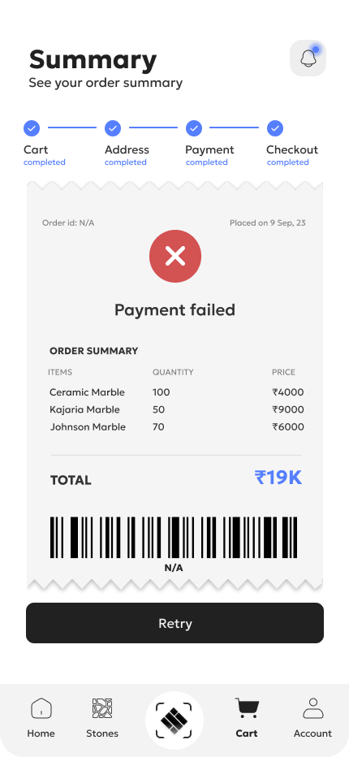
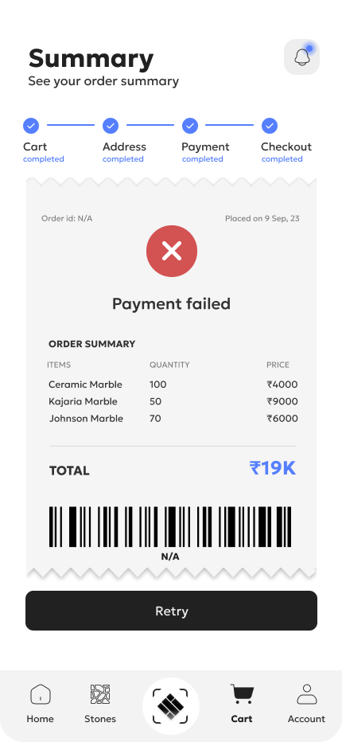

StoneTEKK aims to modernize the traditionally disorganized stone industry. The project includes a real-time inventory management system, an e-commerce platform for purchasing stone online, and an AR experience for visualizing stone in 3D on walls or floors. It also features an advanced calculator for pricing stone defects.
The stone industry often relies on paper-based systems and lacks digital solutions for managing inventory and sales. StoneTEKK was developed to address these inefficiencies by integrating technology into every aspect of the industry, from inventory management to customer purchasing experiences.
The traditional stone industry suffers from disorganization and inefficiencies. There is a need for a modern system to manage inventory, provide an online purchasing solution, and offer tools for dealing with defects and pricing adjustments.
As the UX Lead for StoneTEKK, I led the design and development of a transformative management system for the
stone industry, addressing inefficiencies in a paper-reliant sector. The platform integrated real-time
inventory management, an e-commerce solution, and AR-based 3D visualization for stone layouts.
Pitch for Stone Industry Management app
Skeleton Loading: Smartly animated skeleton loader that improves loading experience.
Developed a style guide using the Geologica font, ensuring consistency across the platform. The design system included guidelines for color, typography, and component styles to maintain a cohesive user experience.

In our research and testing, we found that users preferred having an indication of the number
of steps
required to order a stone. We implemented a step-by-step guide showing the stages: adding to cart, adding
address, adding payment, and swiping to pay, labeled as 1, 2, 3, 4. Upon completing the process, we added a
celebration confetti animation for a successful order. This feature was well-received and loved by users.
The Zeigarnik Effect, a psychological phenomenon where people remember uncompleted or interrupted
tasks
better than completed ones, can be leveraged in UX design to enhance user engagement and completion rates.
By showing users the steps required to complete their order, we tap into the Zeigarnik Effect, keeping them
motivated to continue through each step until completion. If a person leaves the process mid-way, they are
constantly reminded of their incomplete steps when they return to browse more stones, driving their desire
to complete the task. The visual progress indicators and the final celebration confetti act as incentives,
reducing the likelihood of task abandonment and ensuring a more satisfying user experience.
This strategic
use of the Zeigarnik Effect in our design directly contributed to the positive feedback and increased user
satisfaction in our case study. Users particularly loved the gamification aspect, where the confetti
celebration provided a rewarding sense of achievement upon completing their purchase.
An innovative UX backed by Robust algorithms to solve client needs.
Created initial sketches and wireframes focusing on the user flow from inventory management to purchasing and defect calculation. Emphasized intuitive navigation and clear progress indicators.

Iterated on designs based on user feedback and usability testing. Refined the step-by-step guide, AR experience, and defect calculator to improve functionality and user engagement.
Created a high-fidelity prototype in Figma, showcasing the full user journey from managing inventory to completing a purchase and visualizing stone in AR.

Conducted usability tests to ensure the system met user needs and expectations. Tested the step-by-step order guide, AR features, and defect calculator to gather feedback and identify areas for improvement.


 



Future enhancements could include additional features for inventory management, expanded AR capabilities, and further refinements to the defect calculator (detecting largest rectangle at certain angles for some tiles).
Initial designs could have benefited from more in-depth user research and testing, particularly in the AR and e-commerce areas, to ensure the platform met all user needs effectively.
The project successfully addressed key industry pain points and received positive feedback for its innovative approach and user-friendly design. Future iterations should continue to focus on refining the AR experience and exploring new features to further enhance the system.
Wow you read it all!
Click below to Celebrate with me :D